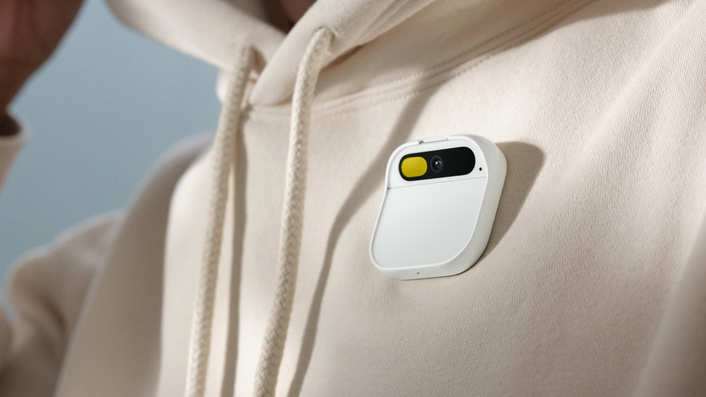

Notícia
O curioso dispositivo IA da Humane chegará aos clientes em março
A startup Humane prepara a entrega das primeiras unidades do Humane Ai Pin para março de 2024. Aquele bizarro aparelho que ganhou as manchetes em novembro tem preço sugerido de US$ 699 nos Estados Unidos, o que dá mais de R$ 3.370 em conversão direta. Será que a moda pega?
O anúncio foi feito pela própria empresa numa rede social. Na falta de uma descrição mais sucinta, seus criadores dizem que se trata do “primeiro computador vestível com inteligência artificial do planeta”. Originalmente, a Humane disse...
Clique aqui para mais detalhes ou na imagem acima